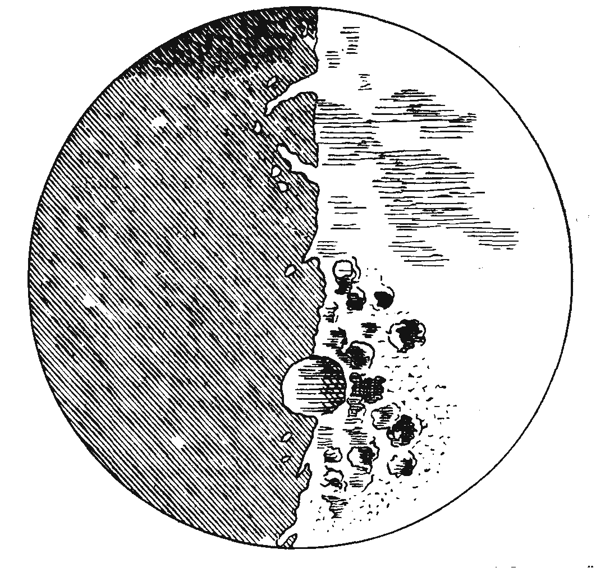

10. Теоретическая необоснованность использования телескопаПервоначальные опыты с телескопом также не давали такого обоснования: наблюдения неба с помощью телескопа были смутными, неопределенными и противоречили тому, что каждый мог видеть собственными глазами. А единственная теория, которая могла помочь отделить телескопические иллюзии от подлинных явлений, была опровергнута простой проверкой
Начнем с того, что существует проблема телескопического видения. Эта проблема различна для небесных и земных объектов, и она именно так и мыслилась для этих двух случаев[1]. Представление о различиях в постановке этой проблемы опиралось на принятую в то время идею о том, что небесные и земные объекты образованы из различных веществ и подчиняются разным законам. Из этой идеи следует, что результат взаимодействия света (связывающего обе области и обладающего особыми свойствами) с земными объектами без дополнительного рассмотрения вопроса нельзя экстраполировать на область небесных объектов. В полном соответствии с аристотелевской теорией познания[2] (а также с существовавшими воззрениями на материю) к этой физической идее добавлялась идея о том, что человеческие чувства знакомы близлежащими земными объектами и способны воспринимать их ясно, даже если телескопический образ значительно искажен или искривлен окрашенными краями. Мы не знаем, как выглядят звезды вблизи. Поэтому при их наблюдении мы не можем опереться на нашу память для отделения собственных черт объекта от того, что вносит в образ телескоп[3]. Кроме того, все знакомые ориентиры (например, задний план, перекрытие одним предметом другого, знание размеров близких предметов и т. п.), формирующие образ и способствующие видению на поверхности Земли, отсутствуют, когда мы смотрим на небо, поэтому в этом случае появляются новые и неожиданные феномены[4]. Лишь новая теория зрения, соединяющая в себе гипотезу о поведении света в телескопе и гипотезу о реакции глаза в необычных обстоятельствах, могла бы перебросить мост через пропасть, разделяющую небо и землю, — пропасть, которая была и все еще продолжает оставаться очевидной в физике и астрономии[5]. Вскоре мы будем иметь случай оценить теории, существовавшие в то время, и увидим, что они были непригодны для решения этой задачи и опровергались простыми и ясными фактами. Сейчас же я хочу остановиться на самих наблюдениях и высказать несколько замечаний о противоречиях и трудностях, возникающих при попытке считать результаты телескопических наблюдений неба в их внешней видимости указаниями на устойчивые, объективные свойства рассматриваемых вещей. Некоторые из этих трудностей уже заявили о себе в отчете современника Avvisi[6], который заканчивается замечанием о том, что, “хотя они [участники описанной встречи] специально вышли для проведения этого наблюдения [четырех новых звезд или планет, которые являются спутниками Юпитера, а также двух спутников Сатурна[7]] и оставались там до утра, они все-таки не пришли к соглашению о том, что видели”. Другая встреча, ставшая известной всей Европе, делает ситуацию еще более ясной. Приблизительно годом раньше, 24 и 25 апреля 1610 г., Галилей принес телескоп в дом своего оппонента Маджини, жившего в Болонье, чтобы продемонстрировать его двадцати четырем профессорам всех специальностей. Хорки, экзальтированный ученик Кеплера, писал об этом событии[8]: “Я так и не заснул 24 и 25 апреля, но проверил инструмент Галилео тысячью разных способов[9] и на земных предметах, и на небесных телах. При направлении на земные предметы он работает превосходно, при направлении на небесные тела обманывает: некоторые неподвижные звезды [была упомянута, например, Спика Девы, а также земное пламя] кажутся двойными[10]. Это могут засвидетельствовать самые выдающиеся люди и благородные ученые... все они подтвердили, что инструмент обманывает... Галилео больше нечего было сказать, и ранним утром 26-го он печальный уехал... даже не поблагодарив Маджини за его роскошное угощение...” Маджини писал Кеплеру 26 мая: “Он ничего не достиг, так как никто из присутствовавших более двадцати ученых не видел отчетливо новых планет; едва ли он сможет сохранить эти планеты”[11]. Несколько месяцев спустя (в письме, подписанном Руффини) Маджини повторяет: “Лишь люди, обладающие острым зрением, проявили некоторую степень уверенности”[12]. После того как Кеплера буквально завалили отрицательными письменными отчетами о наблюдениях Галилея, он попросил у Галилея доказательств[13]: “Я не хочу скрывать от Вас, что довольно много итальянцев в своих письмах в Прагу утверждают, что не могли увидеть этих звезд [лун Юпитера] через Ваш телескоп. Я спрашиваю себя, как могло случиться, что такое количество людей, включая тех, кто пользовался телескопом, отрицают этот феномен? Вспоминая о собственных трудностях, я вовсе не считаю невозможным, что один человек может видеть то, что не способны заметить тысячи...[14]. И все-таки я сожалею о том, что подтверждений со стороны других людей приходится ждать так долго... Поэтому, Галилео, я Вас умоляю как можно быстрее представить мне свидетельства очевидцев...” В своем ответе от 19 августа Галилей ссылается на самого себя, на герцога Тосканского и Джулиано Медичи, “а также на многих других жителей Пизы, Флоренции, Болоньи, Венеции и Падуи, которые, однако, хранят молчание или колеблются. Большинство из них совершенно не способно отличить в качестве планеты Юпитер, Марс или даже Луну...”[15] Мягко говоря, не очень-то утешительное положение дел! Сегодня мы несколько лучше понимаем, почему прямое обращение к телескопическому наблюдению должно было привести к разочарованиям, особенно на первых порах. Основная причина, которую предвидел уже Аристотель, состоит в том, что органы чувств, работающие в необычных условиях, способны давать необычную реакцию. Некоторые из старых историков догадывались об этом, однако описывали лишь негативную сторону дела, пытаясь объяснить отсутствие удовлетворительных данных наблюдения и бедность картины, видимой в телескоп[16]. Они не осознавали возможности того, что наблюдатель может находиться также под влиянием устойчивых позитивных иллюзий. Влияние таких иллюзий было осознано лишь в самое последнее время главным образом в результате исследований Рончи и его школы[17]. Эти ученые получили данные о громадных вариациях в расположении телескопического образа и, соответственно, в наблюдаемом увеличении. Некоторые наблюдатели правомерно помещают этот образ внутрь телескопа, совмещая изменение его горизонтального положения с горизонтальным положением глаза точно так, как это имеет место в случае вторичного изображения, или отражения внутри телескопа, — это прекрасное доказательство того, что мы должны иметь дело с “иллюзией”[18]. Другие наблюдатели помещают изображение так, что увеличения не происходит вообще, хотя предполагается увеличение в тридцать раз[19]. Два двойных изображения могут быть результатом отсутствия надлежащей фокусировки[20]. Если к этим психологическим трудностям[21] добавить многочисленные несовершенства современных телескопов, то редкость удовлетворительных отчетов вполне понятна, и удивляет скорее быстрота, с которой реальность новых феноменов была признана и, как тогда полагалось, публично провозглашена[22]. Это еще более удивительно, если принять во внимание то обстоятельство, что многие отчеты даже лучших наблюдателей были либо явно ложными (причем доказать это можно было уже в то время), либо просто противоречивыми. Так, например, Галилей говорит о неровностях, “громадных возвышениях, глубоких впадинах и пропастях”[23] на внутренней границе освещенной стороны Луны, в то время как внешняя граница “не кажется неровной, угловатой и извилистой, но совершенно круглой, ограниченной точной дугой окружности и не испорченной никакими возвышениями или впадинами”[24]. В таком случае Луна выглядит гористой в центре, но совершенно гладкой по краям, несмотря на то что края изменяются благодаря небольшим вибрациям шара Луны. Луна и некоторые планеты, такие, например, как Юпитер, кажутся увеличенными, в то время как видимый диаметр неподвижных звезд уменьшается: первые становятся ближе, а вторые отодвигаются. “...Звезды, как неподвижные, так и блуждающие, — пишет Галилей, — при рассмотрении в зрительную трубу никак не кажутся увеличившими свои размеры в той же пропорции, в какой получаются приращения у остальных предметов и даже у Луны. На звездах такое увеличение оказывается гораздо меньшим, так что зрительная труба, которая остальные предметы увеличивает, скажем, во сто раз, может сделать большими звезды лишь в четырех или пятикратном отношении, чему еле поверишь”[25]. Однако самые удивительные черты ранней истории телескопа выявляются при более внимательном рассмотрении рисунка Луны, сделанного Галилеем. Достаточно одного беглого взгляда на рисунок Галилея и фотографию Луны в той же фазе, чтобы убедиться в том, что “ни одну из зарегистрированных черт... нельзя с уверенностью отождествить с какими-либо известными деталями лунного ландшафта”[26]. Приняв это во внимание, легко прийти к мысли о том, что “Галилей вовсе не был великим астрономом-наблюдателем или что волнение, вызванное его многочисленными телескопическими открытиями в то время, на какой-то период ослабило его искусство наблюдателя или критическое чутье”[27].
 Илл. 1. Вид лунных гор и морей по Галилею
Это утверждение вполне может быть истинным (хотя у меня оно вызывает сомнение перед лицом того совершенно необычайного искусства наблюдения, которое Галилей проявлял в других случаях)[28]. Однако оно малосодержательно и, как мне представляется, не очень интересно. Оно не влечет дальнейших предположений для дополнительного исследования, поэтому его трудно проверить[29]. Существуют, однако, другие гипотезы, которые приводят к новым предположениям и показывают, в какой сложной ситуации находился в то время Галилеи. Рассмотрим две из них. Гипотеза I. Галилей честно регистрировал то, что видел, и благодаря этому оставил нам свидетельство дефектности первых телескопов, а также особенностей современного ему телескопического видения. В подобной интерпретации рисунки Галилея являются точно такими же отчетами, как отчеты об экспериментах Страттона, Эрисмана и Колера[30], если к тому же принять во внимание различия в физической аппаратуре и непривычность рассматриваемых объектов[31]. Следует также помнить о множестве конфликтующих между собой концепций относительно поверхности Луны, которые существовали как раз в период деятельности Галилея[32] и могли оказывать влияние на то, что именно видел наблюдатель[33]. Новый свет на обсуждаемый вопрос могла бы пролить эмпирическая совокупность всех ранних телескопических результатов, расписанных в параллельные колонки, включая все сохранившиеся рисунки[34]. Если отвлечься от особенностей инструментов, такая коллекция добавляет прекрасный материал к еще не написанной истории восприятия (и науки)[35]. Таково содержание гипотезы I. Гипотеза II носит более специальный характер и развивает в определенном направлении гипотезу I. С различной степенью увлечения я анализировал ее в течение последних двух-трех лет, а недавнее письмо от проф. С. Тулмина, которому я благодарен за простое и ясное изложение этой гипотезы, вновь оживило мой интерес к ней. Мне представляется, однако, что данная гипотеза встречает многочисленные трудности и, по-видимому, должна быть отброшена. Подобно гипотезе I, гипотеза II подходит к телескопическим отчетам с точки зрения теории восприятия, однако она добавляет, что практика телескопических наблюдений и знакомство с новыми отчетами о таких наблюдениях изменяют не только то, что мы видим через телескоп, но также и то, что мы видим невооруженным глазом. Это, несомненно, важно для нашей оценки современной позиции по отношению к отчетам Галилея. Мысль о том, что чувственные образы звезд и Луны в какое-то время были гораздо более неопределенными, чем сегодня, первоначально была внушена мне фактом существования различных теорий относительно Луны, которые несовместимы с тем, что каждый может непосредственно видеть своими глазами. Теория частичных остановок Анаксимандра (предназначенная для объяснения фаз Луны), убеждение Ксенофана в существовании различных солнц и лун для разных районов Земли, предположение Гераклита о том, что затмения и фазы Луны обусловлены тем, что чашеобразные Солнце и Луна поворачиваются[36], — все эти концепции противоречат существованию неизменной и ясно видимой поверхности, “лица”, которым, как мы “знаем”, обладает Луна. Это справедливо и для теории Беросса, изложение, которой можно встретить у Лукреция[37] и даже позднее у Альгазена. Такое пренебрежение явлениями, совершенно очевидными для нас, может быть обусловлено либо полным безразличием к существующей очевидности, которая была столь же ясной и четкой, как в наши дни, либо отличиями в самой очевидности. Нелегко сделать выбор между этими альтернативами. Находясь под влиянием Витгенштейна, Хэнсона и других, я в течение некоторого времени склонялся ко второму варианту, однако теперь мне кажется, что он исключается как физиологией (психологией)[38], так и исторической информацией. Вспомним, как Коперник игнорировал трудности, связанные с изменениями яркости Марса и Венеры, хорошо известные в его время[39]. Что же касается “лица” Луны, то мы видим, что Аристотель совершенно ясно говорит о нем, когда замечает, что “звезды и не катятся. Катящееся должно поворачиваться, а Луна постоянно видна со стороны так называемого лица”[40]. В таком случае мы можем заключить, что встречающееся пренебрежение неизменностью облика Луны обусловлено не отсутствием ясных впечатлений, а широко распространенными концепциями о ненадежности органов чувств. Этот вывод подтверждается обсуждением данного вопроса у Плутарха, который совершенно явно занимается не тем, что видно (исключая случаи, когда это нужно в качестве свидетельства за или против определенных концепций), а определенными объяснениями феноменов, которые считаются хорошо известными[41]. “Начать с того, — говорит он, — что абсурдно называть фигуры, видимые на Луне, обманом зрения... своего рода ослеплением. Всякий утверждающий это не понимает, что этот феномен скорее должен проявляться по отношению к Солнцу, ибо Солнце светит ослепительно ярко, и, кроме того, не объясняет, почему люди со слабым зрением не видят различий в облике Луны и она сияет для них полным и ровным светом, в то время как люди с более острым зрением имеют более точный и детальный образ особенностей ее облика и более ясно воспринимают его изменения”. “Неровности также совершенно опровергают эту гипотезу, — продолжает Плутарх[42], — так как видимая нами тень не является непрерывной и беспорядочной и ее неплохо представляют слова Агесинакса: “Она светит огнем, заключенным в круг, но внутри ее глаза голубее, чем глаза невесты, и тонкая бровь ясного лица”. В действительности светлые пятна окружены темными... и они так переплетены, что их очертания напоминают некоторую картину”. Впоследствии неизменность внешнего облика Луны использовалась в качестве аргумента против тех теорий, согласно которым Луна состоит из огня или воздуха: так как “воздух разрежен и не имеет формы, он естественно колеблется и не стоит на месте”[43]. Таким образом, внешний вид представлялся хорошо известным и ясным феноменом, вопрос стоял лишь о значении этого феномена для астрономической теории[44]. Без особых опасений мы можем принять, что это было справедливо и во времена Галилея[45]. Но тогда мы должны, согласиться с тем, что наблюдения Галилея могли быть проверены невооруженным глазом и в результате могли быть объявлены иллюзией. Так, круглая громада под центром лунного диска[46] намного превышает порог наблюдения невооруженным глазом (ее диаметр больше 3,5 дуговых минут), хотя один-единственный взгляд убеждает нас в том, что поверхность Луны вовсе не обезображена таким пятном. Интересно было бы посмотреть, что могут сказать поэтому вопросу[47] современные наблюдатели, а если она художники, то какие выводы они могут отсюда сделать? Резюмируем сказанное. Галилей был очень слабо знаком с существовавшей в его время оптической теорией. На Земле его телескоп давал удивительные результаты, которые получили должную оценку. Как нам теперь известно, сомнения должны были возникнуть в связи с наблюдениями неба. Трудности появились сразу же: телескоп порождал ложные и противоречивые феномены, а некоторые из полученных с его помощью результатов могли быть опровергнуты простым наблюдением невооруженным глазом. Лишь новая теория телескопического видения могла бы внести порядок в этот хаос (который мог увеличиться вследствие того, что и невооруженным глазом в одно и то же время можно видеть различные феномены) и отделить видимость от реальности. Такая теория была разработана Кеплером сначала в 1604, а затем в 1611 г.[48] Согласно учению Кеплера, место изображения точечного объекта можно найти следующим образом: лучи, исходящие от объекта, сначала нужно провести до глаза в соответствии с законами (отражения и) преломления, а затем использовать принцип (изучаемый и в наши дни), гласящий, что “изображение будет видно в той точке, которая образуется пересечением лучей, исходящих из обоих глаз”[49] или, в случае монокулярного зрения, от противоположных сторон зрачка[50]. Это правило, опирающееся на допущение о том, что “изображение есть результат акта зрения”, является частично эмпирическим, а частично геометрическим[51]. Оно основывает положение изображения на “метрическом треугольнике”[52], или, как называет его Рончи, “телеметрическом треугольнике”[53], который образуется лучами, достигающими глаза, и используется глазом и мышлением для того, чтобы поместить изображение на правильном расстоянии от глаза. Какой бы ни была оптическая система и каким бы ни был общий путь лучей от объекта к наблюдателю, мышление наблюдателя использует лишь его последнюю часть и на ней основывает свое визуальное суждение и восприятие. Ясно, что это правило означает значительное продвижение вперед по сравнению со всем предшествующим мышлением. Однако можно показать, что оно совершенно ложно: возьмите увеличительное стекло, определите его фокус и посмотрите на объект, находящийся вблизи. Телеметрический треугольник теперь простирается до бесконечности. Небольшое изменение расстояния то уносит кеплеровское изображение в бесконечность, то возвращает его вплотную к глазу. Такого феномена никто никогда не наблюдал. Мы видим слегка увеличенное изображение на расстоянии, которое в большинстве случаев тождественно реальному расстоянию между объектом и линзой. Видимое расстояние, на которой видно изображение, остается постоянным, как бы мы ни варьировали расстояние между объектом и линзой, и сохраняется даже в том случае, когда изображение начинает искажаться и в конце концов расплывается[54]. Такова была реальная ситуация 1610 г., когда Галилей опубликовал известие о своих астрономических находках. Как реагировал на эту ситуацию сам Галилей? Ответ известен: он возвел телескоп в ранг “превосходного и наилучшего чувства”[55]. Какие основания у него были для этого? Последний вопрос вновь возвращает нас к проблемам, поставленным свидетельствами (против Коперника) и обсужденным в гл. 9.
[1] Едва ли это осознают те, кто утверждает (вместе с Кестнером [205], с. 133), что “нельзя понять, как телескоп может быть хорош и полезен на Земле и тем не менее обманывать при наблюдениях неба”. Замечание Кестнера направлено против Хорки; см. ниже прим. 9—16 настоящей главы. [2] Об этой теории см. Оуэн Дж. [289], с. 83—103. О развитии аристотелевских идей в средние века см. Кромби А. [68] и Баумкер К. [13]. Из работ Аристотеля важны «Вторая аналитика», «О душе», «De Sensu». По поводу движения Земли см. «О небе», 293а28: “Да и многие другие согласятся, что Земле не следует придавать центрального местоположения, заключая о достоверном не на основании наблюдаемых фактов, а скорее на основании умозрительных рассуждений” (курсив мой. — П.Ф.). Как мы видели в гл. 7. Галилей вводит коперниканство точно таким же образом: он изменил опыт так, чтобы тот соответствовал его любимой теории. Тот факт, что человеческие чувства знакомы с нашим повседневным окружением, но способны давать ошибочные показания относительно объектов, находящихся вне этой области, сразу же обнаруживается при взгляде на Луну. На Земле большие и удаленные объекты в знакомом нам окружении, например горные вершины, кажутся большими и далекими. Однако при взгляде на Луну у нас возникает совершенно ложное впечатление о ее размерах и удаленности. [3] Совсем не сложно выделить буквы знакомого алфавита на фоне незнакомых линий, даже если они написаны неразборчивым почерком. В то же время с буквами незнакомого алфавита это невозможно, поскольку части таких букв не соединяются вместе, с тем чтобы создать четкий рисунок, выделяющийся на фоне общих (зрительных) помех (как об этом писал К. Кофка в Psychol. Bully 19, 1922, с. 551 и сл., частично перепечатано в [397]; см. также статью Готтшальда в том же сборнике). [4] О значении таких ориентиров, как диафрагма, перекрестные линии, фон и т. д., в локализации и формировании телескопического образа и о необычных ситуациях, возникающих при отсутствии таких ориентиров, см. Рончи В. [330], гл. 4, особенно с. 151, 174, 189, 191 и сл.; см. также работу Р. Грегори [163], особенно с. 99 (об автокинетических феноменах). Обширный материал о том, что происходит в случае отсутствия знакомых ориентиров, содержится в [214]. [5] В этом состоит причина того, что “глубокого изучения теории преломления”, на которое претендовал Галилей (см. прим. 15 гл. 9), было бы совершенно недостаточно для обоснования полезности телескопа; см. также прим. 16 к настоящей главе. [6] См. об этом гл. 9, прим. 25. [7] Так видели в то время кольцо Сатурна; см. об этом также Р. Грегори [164], с. 139—140. [8] Галилей [155], т. X, с. 342 (подчеркнуто мной для указания на отмеченное выше различие между земными и небесными наблюдениями. — П.Ф.). [9] Эти “сотни” и “тысячи” наблюдений, проб и т. п., с которыми мы опять встречаемся здесь, вряд ли являются чем-то большим, чем риторическим украшением (соответствующим нашему “я вам тысячу раз говорил”). Из них не следует заключать, что люди отдавали наблюдению всю свою жизнь. [10] Здесь опять мы имеем дело со случаем, в котором отсутствуют внешние ориентиры. Относительно вида пламени, слабых источников света и т. п. см. Рончи В. [330]. [11] Письмо от 26 мая, цит. по: [155], т. III. [12] Там же, с. 196. [13] Письмо от 9 августа 1610 г., цит. по: [52], с. 349. [14] Кеплер страдал полиопией (“вместо одного небольшого объекта, расположенного на далеком расстоянии, люди, страдающие этим дефектом зрения, видят два или три. Поэтому вместо одной Луны мне представляются десять и даже больше” — [211], прим. 94; остальная часть этого примечания будет цитироваться ниже) и был знаком с анатомическими исследованиями Платтера (см. подробности и соответствующую литературу в: Польяк С. Л. [303], с. 134 и сл.), поэтому он вполне осознавал необходимость физиологической критики астрономических наблюдений. [15] Цит. по: Каспар Дик [52], с. 352. [16] Так, Э. Волвилл пишет: “Неприемлемые результаты объясняются, несомненно, отсутствием опыта телескопических наблюдении и ограниченным полем зрения галилеевского телескопа, а также невозможностью изменять расстояние между стеклами в зависимости от особенностей глаза наблюдателя...” ([394], с. 288). Похожее суждение, хотя и выраженное более драматично, можно найти в работе А. Кестлера «Sleepwalkers» (Лунатики) (р. 369). [17] См. [330], [331], [332], [ЗЗЗ], а также краткий обзор Э. Кантора в: «Archives d’histoire des Sciences», December, 1966, p. 333 et seq. He скрою, что исследования проф. Рончи оказали большое влияние на мое понимание научного метода. Краткое историческое рассмотрение деятельности Галилея см. в статье Рончи ([69], с. 542—561). Книга С. Толански [377] позволяет заключить, сколь мало изучена эта область. Толански — физик, который в процессе исследований кристаллов и металлов с помощью микроскопа неоднократно поддавался влиянию оптических иллюзий. В связи с этим он пишет: “Это привлекло наш интерес к анализу других ситуаций. Конечным результатом явилось неожиданное открытие, согласно которому оптические иллюзии могут играть и играют вполне реальную роль в повседневных научных наблюдениях. Это заставило меня быть более внимательным, и в итоге я обнаружил гораздо больше проявлений иллюзий, чем предполагал”. Эти “иллюзии непосредственного видения”, роль которых в научном исследовании постепенно открывается заново, были хорошо. известны средневековым авторам работ по оптике, которые посвящали этим иллюзиям специальные главы своих учебников. Более Пито, образы, создаваемые линзами, они считали психологическими феноменами, результатом неправильного представления, ибо, как “вверил Джон Пекэм, образ “есть лишь видимость объекта вне его места” ([254], с. 51; см. также последний абзац утверждения работы Пекэма «Perspectiva Communis», которую можно вайта в [256], с. 1171). [18] Рончи. Оптика [330], с. 189. Это может объяснить часто “доказываемое желание заглянуть внутрь телескопа. Таких проблем не возникает при наблюдении наземных объектов, изображения которых обычно помещены “в плоскости объекта” (там же, с. 182). [19] Об увеличивающей силе галилеевского телескопа см. его «Звездный вестник» [147], с. 11, а также А. Зоннефельд [369], с. 207 и сл. Старое правило, гласящее, “что размер, положение и порядок, делающие вещь видимой, зависят от величины угла, под которым она становится видна” (Р. Гроссетесте. О радуге, вит. по [68], с. 120), и восходящее еще к Евклиду, почти всегда ошибочно. Я до сих пор помню свое разочарование, когда, соорудив рефлектор с предполагаемым увеличением в 150 раз, я обнаружил, что Луна увеличилась не более чем в 5 раз и сильно приблизилась к окуляру (1937 г.). [20] Изображение остается четким и неизменным в течение значительного времени, однако отсутствие фокусировки может проявляться в его удвоении. [21] Первый годный к употреблению телескоп, который Кеплер получил от электора Эрнста из Кёльна (который в свою очередь волучил его от Галилея) и на работу с которым он опирался при описании [212], показывал звезды в виде интенсивно окрашенных квадратиков (см. [208], IV, с. 461). Сам Эрнст Кёльнский был неспособен увидеть что-либо с помощью этого телескопа и просил отца Клавиуса прислать ему более совершенный инструмент (Archivio della Pontifica Universita Gregoriana, 530 f. 182 с.). Ф. Фонтана, наблюдавший фазы Венеры с 1643 г., обратил внимание на неровность границы и отсюда заключил о существовании гор на Венере, см. Вольф Р. [395], с. 398. Литературу об особенностях современных телескопов см. в: Зиннер Э. [404]. См. также каталог, составленный автором во второй части этой книги. [22] Отец Клавиус (письмо от 17 декабря 1610 г., [155], X, с. 485), астроном влиятельной Римской иезуитской коллегии, превозносил Галилея как первого ученого, наблюдавшего луны Юпитера, и признавал их реальность. Маджини, Гринбергер и другие вскоре последовали его примеру. Ясно, что, поступая таким образом, они действовали вопреки методам, предписываемым их собственной философией, или же были совершенно некомпетентны в данном вопросе. Из этого быстрого признания телескопических наблюдений Галилея проф. Мак-Маллин (там же, прим. 32) делает слишком далеко идущие выводы: “Строгая периодичность, наблюдаемая для спутников и фаз Венеры, убедительно указывала то, что они не были артефактами физиологии или оптики. Безусловно, нужды во “вспомогательных науках” не было...” “Нужды во-вспомогательных науках” не было, пишет Мак-Маллин, но использует непроверенную вспомогательную гипотезу о том, что астрономические события отличаются от физиологических своей регулярностью и интерсубъективностью. Однако эта гипотеза ложна, что доказывается иллюзиями, связанными с Луной, миражами, радугой, многочисленными иллюзиями, возникающими при работе с микроскопом и так живо описанными Толански, феноменом колдовства (каждая женщина считалась одержимой злым духом) и громадным числом других феноменов. Ложность этой гипотеза была известна уже Пекэму, Витело и другим средневековым ученым, которые изучали регулярные и интерсубъективные “иллюзии”, создаваемые линзами, зеркалами и другими оптическими приспособлениями. В античности ложность подобной гипотезы не требовала доказательств. В своей книге о кометах Галилей в явной форме обсуждает и отвергает ее. Поэтому новая теория зрения была нужна не только для того, чтобы признать наблюдения Галилея, но также для того, чтобы представить аргументы в защиту их астрономической реальности. Конечно, Клавиус мог не осознавать этой необходимости, что вполне понятно. В конце концов некоторые его искушенные последователи XX столетия, такие, как проф. Мак-Маллин, также не осознают ее. Вдобавок мы должны указать на то, что “строгая периодичность” лун Юпитера была не столь хорошо известна, как пытается внушить нам Мак-Маллин. Всю свою жизнь Галилей пытался определить эти периоды, с тем чтобы найти лучшие способы вычисления долготы в открытом море, но не добился успеха. Позднее та же самая проблема была поставлена в другой форме, когда попытка определить скорость света с более чем одной луной Юпитера привела к противоречивым результатам (Кассини). О позиции Клавиуса и ученых Римской коллегии см. очень интересную книгу [86]. Ранние наблюдения астрономов коллегии содержатся в их собственном «Звездном вестнике» — «Nuncius Sidereus», Ed. Naz., III/l, p. 291—298. [23] Галилей. Звездный вестник [147], с. 21. [24] Там же, с. 29, см. рис. на с. 271, взятый из публикации Галилея. Опираясь на наблюдения невооруженным глазом, Кеплер в своей «Оптике» 1604 г. пишет: “Отдаленная от центра периферия вовсе не кажется ровной и круглой” ([209], II, с. 219). К этому утверждению он возвращается в своей работе [211], с. 28 и сл., критикуя результаты телескопических наблюдений Галилея с позиций того, что он сам видел невооруженным глазом: “Вы спрашиваете, почему внешний край лунного диска не выглядит неправильным. Я не знаю, насколько серьезно Вы размышляли об этом предмете или же, что более вероятно. Ваш вопрос опирается на общераспространенное впечатление. В своей книге («Оптика», 1604) я установил, что несомненно существуют некоторые дефекты внешнего края лунного диска в период полной луны. Изучение этого вопроса вновь убеждает нас, что она выглядит именно так...” Здесь результаты наблюдения невооруженным глазом противопоставляются сообщениям Галилея о его телескопических наблюдениях и, как мы увидим ниже, это противопоставление имеет вполне надежное основание. Читатель, забывший о полиопии Кеплера (см. прим. 14 к данной главе), может удивиться тому, как он мог до такой степени доверять своим органам чувств. Ответ на этот вопрос содержится в следующем отрывке: “Когда начинается затмение Луны, я, страдающий таким дефектом зрения, осознаю это затмение прежде всех других наблюдателей. Задолго до того, как начинается затмение, я определяю направление движения тени, в то время как другие наблюдатели, обладающие гораздо более острым зрением, еще пребывают в сомнении. Упомянутая выше извилистость поверхности Луны (см. предыдущую цитату) предстает передо мной в тот момент, когда Луна достигает тени и большая часть солнечных лучей оказывается отсеченной...” ([208], II, с. 194 и сл.). У Галилея было два объяснения противоречивости образа Луны. Одно включало в себя признание существования лунной атмосферы («Звездный вестник», [147], с. 30 и сл.). Другое объяснение (там же, с. 29—30), ссылающееся на вид группы вершин, заходящих одна за другую, неприемлемо, поскольку распределение гор у края видимой стороны лунного шара не обнаруживает того порядка, который необходим для этого (теперь это обосновано еще более убедительно благодаря фотографиям Луны, сделанным советскими учеными 7 октября 1959 г.; см. Копал З. [218], с. 242) [25] «Звездный вестник», [156], т. I, с. 35; см. также более подробный анализ в «Диалоге» ([156], с. 431 и сл.). “Телескоп как таковой отодвигает от нас небо,—пишет А. Хвалина в [56], с. 90, комментируя уменьшение видимого диаметра всех звезд, за единственным исключением Солнца и Луны. Различие в увеличении планет (или комет) и неподвижных звезд впоследствии было использовано как средство отличения их друг от друга. “Мне известно из опыта, — пишет Гершель в статье, содержащей отчет о его первом наблюдении Урана (Phil. Trans. 71, 1781, с. 493 — эта планета здесь еще отождествляется с кометой), — что диаметр неподвижных звезд не увеличивается пропорционально силе увеличения, как это имеет место для планет; поэтому, изменяя силу увеличения от 460 до 932, я обнаруживаю пропорциональное увеличение диаметра данной кометы, как и должно быть...”. Примечательно, что данное правило нельзя безоговорочно применять к телескопам, использовавшимся во времена Галилея. Так, высказывая свои соображения о ноябрьской комете 1618 г., Горацио Грасси ([78], с. 17) указывает на то, что “при наблюдении в телескоп она почти не увеличивалась”, и в полном соответствии с “опытом” Гершеля заключает отсюда, что “это должно означать, что она находится от нас дальше, чем Луна...”. В своем «Astronomical Balance» ([78], р. 80) он повторяет, что, согласно общему опыту “прославленных астрономов” из “многих стран Европы”, “эта комета при наблюдении даже в очень сильный телескоп почти не получает никакого увеличения...”. Галилей (там же, с. 177) признает этот факт и подвергает критике лишь те выводы, которые делает из него Грасси. Все эти феномены опровергают утверждение Галилея («Пробирщик», [146], с. 204) о том, что телескоп “всегда работает одним и тем же образом”. Они подрывают также его теорию иррадиации (см. прим. 55 к настоящей главе). [26] Копал. Цит. соч., с. 207. [27] Р. Вольф ([395], с. 396) отмечает плохое качество зарисовок Луны Галилеем (“... изображение им Луны едва ли можно... назвать картой”), а Зиннер ([403], с. 473) называет наблюдения Галилеем Луны и Венеры “типичными для начинающего”. По мнению Зиннера, его рисунок Луны “не имеет сходства с Луной” (там же, с. 472). Зиннер упоминает также о гораздо более высоком качестве наблюдений, осуществленных почти в то же время иезуитами (там же, с. 473), и ставит в заключение вопрос, не являются ли галилеевские наблюдения Луны и Венеры скорее результатом деятельности плодотворного ума, нежели внимательного глаза (“причем же тогда... желание считаться отцом наблюдения?”). Последний вопрос представляется весьма уместным, особенно в связи с явлениями, кратко описанными в прим. 33 к настоящей главе. [28] Открытие и идентификация лун Юпитера не считались достижением, потому что еще не было обоснования надежности телескопических наблюдений. [29] Помимо всего прочего, это обусловлено большими различиями в способности к телескопическим наблюдениям у разных наблюдателей, см. Рончи [330], гл. IV. [30] Литературу для первого ознакомления и общий обзор см. в: Грегори [163], гл. II. Подробности и литературу см. в: Смит К. и Смит У. [363] (частично перепечатано в [397]). Читателю следует также посмотреть статью Э. Эймса [3], в которой обсуждаются изменения нормального видения, обусловленные иногда очень небольшим изменением оптических условий. Исчерпывающий анализ этого вопроса дан в работе Рока И. [328]. [31] Многие прекрасные описания старых инструментов и даже они сами все еще доступны, см. Зиннер [404]. [32] Интересную информацию читатель может почерпнуть из соответствующих отрывков «Conversation» [211] и «Somnium» Кеплера (последняя работа теперь имеется в новом переводе Е. Розена, который присоединил сюда значительное количество вспомогательного материала [336]). Образцовым изложением убеждений того времени все еще остается работа Плутарха «Лик Луны» (она будет цитироваться по переводу [300]). [33] “Луну описывают согласно тем объектам, которые, как считают, можно воспринять на ее поверхности” (Кестнер [205], т. IV, с. 167, замечания об отчетах о наблюдениях Фонтаны 1646 г.). “Мэстлин увидел на Луне даже ручей” (Кеплер [211], с. 29 и сл., изложение собственного отчета Мэстлина о наблюдениях); см. также записные книжки Леонардо да Винчи, цитируемые по [327], с. 167: “Если вы помните подробности наблюдаемых на Луне пятен, вы часто обнаружите в них большие изменения — в этом я убедился, зарисовывая их. Это происходит под действием облаков, поднимающихся от лунных вод...” О неустойчивом характере образов неизвестных объектов и их зависимости от веры (или “знания”) см. [330], гл. 4. [34] Гл. 15 работы [218] содержит интересную совокупность в точности такого же рода. Еще более широкую сферу охватывает работа [350]. [35] Нужно, конечно, исследовать также зависимость того, что именно видят, от существующих методов рисования. За пределами астрономической области это было осуществлено в работах Э. Гомбрича [159] и Л. Чоуланта [55] (переведена с добавлениями Зингером и др.), посвященных проблемам анатомии. Астрономия имеет то преимущество, что одна сторона проблемы, а именно звезды, довольно проста по структуре и относительно хорошо известна; см. также ниже, гл. 17. [36] Об этих теориях и соответствующую литературу см. в [79]. [37] О Бероссе см. статью С. Тулмина в: Isis, № 38, 1967, с. 65. Лукреций пишет («О природе вещей»): “Может вращаться Луна и как шар или, если угодно, мяч, в половине одной облитый сияющим блеском, при обращении своем являя различные фазы. Вплоть до того, как она откроется нашему взору той стороною, где вся сверкает пламенем ярким” ([258а], V, 720, с. 184). [38] См. прим. 50 и сл. моей статьи [116]. [39] Во времена античности различия величин Венеры и Марса считались “очевидными для глаз” (Симилиций. О небе. II, 12). Полемарх рассматривает трудности теории геоцентрических сфер Евдокса, связанные, в частности, с тем, что Венера и Марс “в средней точке возвратного движения кажутся во много раз ярче, так что при безлунном небе [Венера] заставляет тела отбрасывать тень” (возражение Автолику), и имеет все основания ссылаться на возможность обмана со стороны органов чувств (такая возможность часто обсуждалась в древних философских школах). Аристотель, который должен был знать все эти факты, не упоминает их ни в «Метафизике», ни в трактате «О небе», хотя анализирует систему Евдокса и ее улучшения Полемархом и Калиппом, см. прим. 7 гл. 9. [40] Аристотель. О небе 290а25 и сл. (курс. мой. — П.Ф.). [41] Симплиций. Цит. соч., II, 12; см. также [344], с. 244 и сл. [42] Там же; см., однако, прим. 17 к настоящей главе, замечание Плиния (Естественная история, II, 43, 46) о том, что Луна “сейчас покрыта пятнами, а затем вдруг начинает ярко сиять”, а также высказывание Леонардо да Винчи, упомянутое в прим. 33 к настоящей главе. [43] [344], с. 50. [44] Все это требует дальнейшего исследования, особенно с учетом современного недоверия к зрению, выраженного в принципе “Non potest fieri scientia per visum solum” (“Взирая на Солнце, не породить научного знания”. — лат.). Рончи (в статье [69], критику которой см. в работе [255]) по поводу этого принципа пишет следующее: “То, что наблюдается простым зрением, не может быть научно оформлено. Визуальное наблюдение никогда не имеет значения, если оно не подтверждено прикосновением”. Вследствие этого “в микроскопе не используются... увеличенные изображения (создаваемые вогнутыми зеркалами). Причина этого важного факта ясна: никто не верит тому, что видит в зеркале, поскольку осознает, что не может подтвердить прикосновением то, что видит” (с. 544). Существуют также удивительные изменения восприятия в земных условиях, которые, по-видимому, можно извлечь из результатов Снелла и Доддса, см. гл. 17. Может быть, не вполне разумно также допускать, что на феномены никак не влияют концепции, рассматривающие их отношение к миру. (Вторичные изображения могут быть яркими и беспокоящими того, кто только что приобрел способность видеть. Позднее эти изображения становятся почти незаметными, и для их изучения требуются особые методы.) Гипотеза, высказанная в тексте, развита лишь в одном направлении и без особой тщательности, ибо я убежден в том, что она истинна. Я просто хотел указать возможные пути исследования и вызвать ясное понимание сложности ситуации в период деятельности Галилея. [45] Серьезным аргументом в пользу этого утверждения является описание Луны Кеплером в его «Оптике» 1604 г. Он высказывает замечания о прерывистом характере границы между светом и тенью ([208], II, с. 218) и сравнивает темную, закрытую часть Луны с рваной плотью или вырубленным лесом ([208], с. 219). К этим отрывкам он возвращается в своем «Conversation» ([211], с. 27), в котором говорит Галилею: “Ваши весьма тонкие наблюдения не подрывают моих собственных показаний, так как в [моей] «Оптике» вы имеете дело с половиной Луны, разделенной волнистой линией. Из этого факта следует вывод о существовании на поверхности Луны гор и впадин. [Позднее] я сравнил Луну, покрытую тенью, с рваной плотью или вырубленным лесом с блестящими полосками, проникающими в область тени”. Вспомним также, что Кеплер критиковал телескопические отчеты Галилея, опираясь на свои собственные наблюдения невооруженным глазом; см. прим. 24 к настоящей главе. [46] “Об одном только я никак не могу забыть. Я это заметил даже с некоторым удивлением. Середина Луны занята как бы некоторой впадиной, значительно большей, чем все остальные, и совершенно круглой по форме; ее я заметил вблизи обеих четвертей и, насколько возможно, изобразил на вторых частях приводимых рисунков. Она при затемнении и освещении представляет такой вид, как если бы на Земле область вроде Богемии была окружена со всех сторон величайшими горами, расположенными по окружности совершенного круга; на Луне она окружается настолько великими хребтами, что крайние места, соседние с темной частью Луны, кажутся залитыми солнечным светом, прежде чем граница света и тени достигнет среднего диаметра ее фигуры” («Звездный вестник» [156], т. I, с. 27). Думаю, что это описание вполне опровергает предположение Копала о неопределенности наблюдений. Интересно отметить различие между гравюрами в «Звездном вестнике» ([156], т. I, с. 27, 28) и первоначальным рисунком Галилея. Гравюра вполне соответствует этому описанию, в то время как первоначальный рисунок с его выразительными особенностями (“Вряд ли это карта”, — говорит Вольф) является настолько неопределенным, что не способен избежать обвинения в грубых ошибках. [47] “Я не могу понять, что означает эта большая круглая впадина в том месте, которое я обычно называю левым углом Луны”, — пишет Кеплер ([211], с. 28) и переходит к предположениям о ее происхождении (включая предположение о сознательной деятельности разумных существ). [48] Я не рассматриваю здесь работы Порты (De Refractione) и Мавролика, которые в определенных отношениях предвосхитили Кеплера (и упомянуты им в соответствующих местах). Мавролик сделал важный шаг (Photismi de Lumine, перев. Г. Крю [Нью-Йорк, 1940], с. 45 — о стеклах и с. 74 — о линзах), рассматривая только кристаллы каустической соды, однако связь с тем, что видно невооруженным глазом, еще не была обоснована. О трудностях, которые были устранены простой и остроумной гипотезой Кеплера, см. Рончи [331], гл. III. [49] [208], II, с. 72. «Оптика» 1604 г. частично была переведена на немецкий язык Ф. Пленом [298]. Важные отрывки встречаются в разд. 2 гл. 3, с. 38—48. [50] Там же, с. 67. [51] “Cum imago sit visus opus” (там же, с. 64). “In visione tenet sensus communis oculorum suorum distantiam ex assuefactione, angu-los vero ad illam distantiam notat ex sensu contortionis oculorum” (там же, с. 66). [52] “Triangulum distantia mensorium” (там же, с. 67). [53] Рончи [330], с. 44. Об истории оптики до Кеплера можно посмотреть также гл. 2 этой книги. [54] Рончи [330], с. 182, 202. Это явление известно каждому, кто хотя бы однажды пользовался увеличительным стеклом, включая и Кеплера. Отсюда следует, что пренебрежение известными феноменами еще не говорит о том, что данные феномены были видны иначе (см. прим. 44 настоящей главы). Истолкование И. Барроу тех трудностей, к которым приводило правило Кеплера, было упомянуто выше (прим. 16 гл. 5). Согласно Беркли (цит. соч., с. 141), “этот феномен... совершенно ниспровергает мнение тех, кто оценивает расстояния с помощью линий и углов...”. Это мнение Беркли заменяет собственной теорией, согласно которой разум оценивает расстояния, опираясь на ясность или расплывчатость первых впечатлений. Кеплеровская идея телеметрического треугольника сразу же была принята почти всеми исследователями в данной области. Фундаментальное значение ей придал Декарт, согласно которому “distantiam... discimus, per mutuam quandam conspirationem oculorum” (Диоптрика [71], с. 87). “Однако, — говорит Барроу, — ни эта, ни любая другая трудность... не заставят меня отказаться от того, что, как мне известно, очевидно согласуется с разумом”. Именно эта позиция ответственна за медленное развитие научной теории зрительных стекол и оптики в целом. “Объяснение этого странного феномена, — пишет Мориц фон Pop ([329], с. 1), — следует искать в тесной связи между подзорной трубой и глазом. Невозможно сформулировать приемлемую теорию. подзорной трубы без понимания того, что происходит в процессе самого зрения...” Телеметрический треугольник как раз упускает из виду этот процесс или, вернее, дает ему упрощенное и ложное истолкование. Состояние оптики в начале XX столетия хорошо описано в работе А. Гэллстранда [167], с. 261 и сл. Здесь мы можем прочитать о том, как обращение к психо-физиологическому процессу зрения позволило физикам прийти к более удовлетворительному пониманию даже самих физических проблем оптического изображения: “Причина того, почему законы актуального оптического изображения были, так сказать, вызваны к жизни требованиями физиологической оптики, отчасти заключается в том факте, что посредством тригонометрических вычислений, несомненно скучных, но легко осуществимых, инженер-оптик мог приблизиться к пониманию сущности своих проблем. Таким образом, благодаря работе таких людей, как Аббе и его школа, техническая оптика достигла своего современного блестящего развития, хотя с имеющимися научными средствами исчерпывающее понимание сложных отношений формирования изображения в глазу было актуально недостижимо”. [55] “О, Николай Коперник, как приятно было бы тебе видеть подтверждение твоей системы столь ясным опытом!” — пишет Галилей, подразумевая, что новые телескопические феномены дают дополнительную поддержку системе Коперника (Диалог, с. 434). Различие во внешнем виде планет и неподвижных звезд (см. прим. 27 к наст. главе) он объясняет с помощью гипотезы, согласно которой “инструмент зрения [глаз] даже сам по себе чинит помехи” (там же, с. 430), и телескоп устраняет эти помехи, а именно иррадиацию, позволяя глазу видеть звезды и планеты такими, как они существуют в действительности. (Один из последователей Галилея, Марио Джудуччи, объясняет иррадиацию рефракцией влажной поверхности глаза — «Рассуждение о кометах 1618 г.», цит. соч., с. 47.) Хотя это объяснение кажется правдоподобным (в частности, в связи с попыткой Галилея показать, как можно устранить иррадиацию иными средствами, нежели телескоп), оно вовсе не является простым. Гэллстранд (цит. соч., с. 426) говорит, что “вследствие свойств волновой поверхности, образуемой лучами, преломляющимися в глазу... для любого поперечного сечения математически невозможно образовать гладкую кривую в форме круга, с центром в зрачке глаза”. Другие авторы указывают на “неоднородности в различных жидкостях человеческого организма, и прежде всего в хрусталике глаза” (Рончи. Оптика, [330], с. 104). Кеплер дает такое истолкование ([211], с. 33 и сл.): “Точечный источник света посылает пучок лучей в хрусталик глаза. Здесь имеет место преломление, и позади хрусталика пучок вновь сжимается в точку. Но эта точка не попадает точно на ретину. Поэтому свет сразу же рассеивается и распространяется в небольшой области ретины, хотя должен был бы попасть в одну точку. Телескоп вносит другое преломление, что и приводит к совпадению этой точки с ретиной”. Польяк в своем классическом произведении «Ретина» [303] приписывает иррадиацию частично “дефектам преломляющей среды и несовершенству аккомодации”, но главным образом — “особенностям структурного строения самой ретины” (с. 176), добавляя, что она может быть также функцией самого мозга (с. 429). Ни одна из этих гипотез не охватывает всех фактов, известных относительно иррадиации. Гэллстранд, Рончи и Польяк (если не обращать внимания на его ссылку на мозг, которая может объяснить все что угодно) не способны объяснить исчезновение иррадиации в телескопе. Кеплер, Гэллстранд и Рончи также не дают объяснения факту, подчеркнутому Рончи, согласно которому крупные объекты не обнаруживают краевой иррадиации. (“Если кто-либо пытается объяснить феномен иррадиации, он должен согласиться с тем, что, когда он смотрит на электрическую лампочку издалека, так что она выглядит как светящаяся точка, он видит ее окруженной светлым ореолом лучей, в то время как вблизи он вообще ничего вокруг нее не видит”. — Оптика, [330], с. 105.) Теперь нам известно, что четкость образа крупных объектов обеспечивается тормозящим взаимодействием ретинальных элементов (которое еще увеличивается благодаря работе мозга, см.: Ratliff, Mach. Bands, p. 146), однако изменение этого феномена вместе с изменением диаметра объекта и влияние условий телескопического зрения остаются неисследованными. Гипотеза Галилея получала поддержку главным образом по причине соответствия точке зрения Коперника и была, следовательно, в значительной степени ad hoc.
|